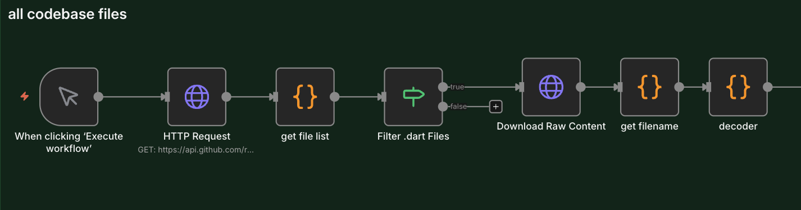
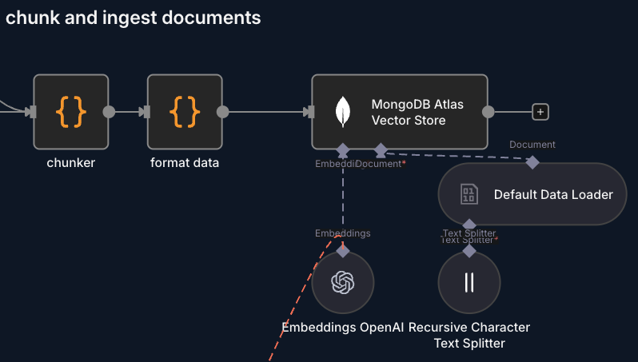

1. System Overview
This n8n automation consists of three main workflows:
- Initial indexing: Downloads the entire codebase and loads it into a vector store
- Automatic sync: Every push to GitHub automatically updates modified files
- AI Assistant: A Telegram bot that uses the codebase to create GitHub issues and answer questions

Tech Stack:
- n8n for orchestration
- MongoDB Atlas as vector store
- Google Vertex AI (Gemini 2.5 Pro) as LLM
- Telegram as user interface
2. Codebase Indexing
The Basic Flow
The first step is to download all .dart files from the GitHub repository and prepare them for embedding.
Main nodes:
HTTP Request→ Downloads the file tree from GitHub APIget file list→ Transforms the tree into a file listFilter .dart Files→ Filters only Dart filesDownload Raw Content→ Downloads the raw content of each file
You can get the complete file list using the GitHub API tree endpoint: replace "owner/your-repo" with your repository and "COMMIT_SHA" with the commit SHA you want to explore.
https://api.github.com/repos/OWNER/YOUR-REPO/git/trees/COMMIT_SHA?recursive=1By replacing OWNER/YOUR-REPO and the SHA, you get all the files present in that commit.

Intelligent Chunking
Here's where it gets interesting. We can't just put entire files in the vector store - they're too large. We need to do "chunking", but intelligently.
// The code looks for semantic separators in Dart code
const separators = [
/\nclass /,
/\nimport /,
/\nvoid /,
/\nFutureInstead of randomly cutting the code every X characters, the chunker node tries to split on semantic boundaries - when a new class starts, an import, a function, etc. This keeps the context intact.
Maximum chunk length: 1200 characters
Data Format
Each chunk is structured like this:
{
file: "path/to/file.dart",
chunkIndex: 0,
content: "class MyWidget extends StatelessWidget..."
}And then transformed :
{
pageContent: "class MyWidget...",
metadata: {
filename: "path/to/file.dart",
chunkIndex: 0
}
}Embeddings and Storage
- Embeddings are generated and saved in MongoDB Atlas with vector index
- Each chunk is semantically searchable

3. Automatic Updates on Push
The Problem
Indexing the entire codebase is fine the first time, but what happens when you commit? I don't want to re-index everything every time.
The Solution: Incremental Updates
The Github Trigger node listens to push events and the get new files node processes commits to understand what changed:
const filesToIngest = new Set(); // New or modified files
const filesToDelete = new Set(); // Removed or modified files
for (const commit of commits) {
commit.added.forEach(path => filesToIngest.add(path));
commit.modified.forEach(path => {
filesToIngest.add(path); // Re-index new version
filesToDelete.add(path); // Remove old version
});
commit.removed.forEach(path => filesToDelete.add(path));
}
Two Separate Branches
The Switch node splits the flow:
- Branch "delete": Removes old documents from MongoDB
- Branch "ingest": Downloads and indexes new files
Example delete operation:
{
"operation": "delete",
"collection": "codebase",
"query": "{ \"filename\": \"lib/screens/home.dart\" }"
}Logging to Google Sheets
Every change is logged to a Google Sheet with:
- File path
- Operation (delete/ingest)
- Timestamp
- Commit ID
- Author
This allows for a complete history of changes to the vector store.
4. AI Agent with Telegram
The User Interface
I chose Telegram as the interface because:
- It's fast
- Supports voice messages
- Always available on my phone
- Has a good API
The Telegram Flow
Telegram Trigger→ Receives messagesis admin→ Verifies it's me or an authorized userSwitch1→ Distinguishes between text, photo, and audioCode in JavaScript1→ Extracts text from messageAI Agent→ Processes the request

Multimodal Support
Voice Messages:
- Downloaded via Telegram API
- Transcribed with Gemini using Vertex AI APIs
- Processed as normal text
Images:
- Analyzed with Gemini
- The idea is to analyze them for UI/bug screenshots
The AI Agent
The heart of the system is the AI Agent node configured with:
LLM: Google Vertex AI - Gemini 2.5 Pro
I use Google because I have free credits from Vertex
Available tools:
MongoDB Atlas Vector Store→ Searches the codebaseCreate an issue in GitHub→ Creates issues automatically
Memory: Buffer window memory
- Maintains conversational context
- One session per Telegram chat
The System Prompt
The prompt is long and detailed, but the key points are:
Core Capabilities:
- GitHub Issue Creation - Convert user messages into structured issues
- Coding Assistant - Provide development guidance using codebase knowledge
- File Recommendations - Suggest specific files to edit
Reasoning Budget
An interesting thing in the prompt is the "reasoning budget":
Maximum 2-3 reasoning steps per response
NO loops or iterations - Decide → Draft → DoneThis forces the agent to be efficient and not waste tokens on useless reasoning.
5. How RAG Works
Retrieval-Augmented Generation
RAG = Retrieve relevant information before generating a response.
The process:
- User query → "the button to select the exam in the timer isn't working?"
- Query embedding → Converts the question into a numeric vector
- Similarity search → Searches for the most similar chunks in the vector store
Query vector: [0.23, -0.45, 0.12, ...]
Top results:
- pages/timer/button.dart (similarity: 0.89)
- pages/timer/exam_selector.dart (similarity: 0.82)
- src/interceptors/authInterceptor.ts (similarity: 0.78)- Context injection → Relevant chunks are passed to the LLM
- Response generation → The LLM generates the response using the context
Why It Works
- Semantic search: Doesn't search for keywords, but meaning
- Precise context: Only the relevant parts of the code
- Always up to date: The vector store syncs with every push
6. Practical Results
What I Can Do Now
1. Create issues quickly
Telegram: "I want to add dark mode to the settings page, assign it to copilot"
Bot: [Complete issue draft with files to modify]
Me: "yes"
Bot: ✅ Issue #123 created2. Ask questions about the code
Telegram: "where is the user state managed?"
Bot: "User state is managed in src/state/userState.dart using Bloc.
It's initialized in src/app.dart at app launch..."3. Assisted debugging
Telegram: "I have an error in API parsing, where should I look?"
Bot: "Check src/services/apiService.dart, lines 45-60.
JSON parsing might fail if a field is missing..."Metrics
- Time to create an issue: From 5-10 minutes → 30 seconds
- Chunks in vector store: ~3788
- Cost per query: zero (Google provides free credits)
7. Next Steps
New files:
If the automation is down and new commits arrive, they get lost. It would be better to implement a system that doesn't just look at the last push's changes but compares the differences between the last processed commit and the latest one that arrived.
Open source:
Use open source models when possible.